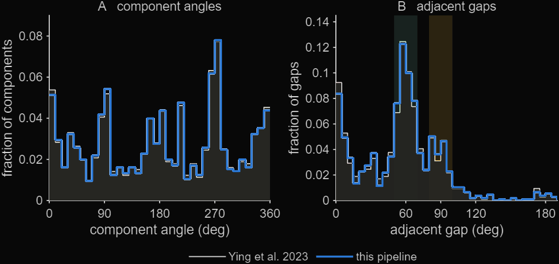
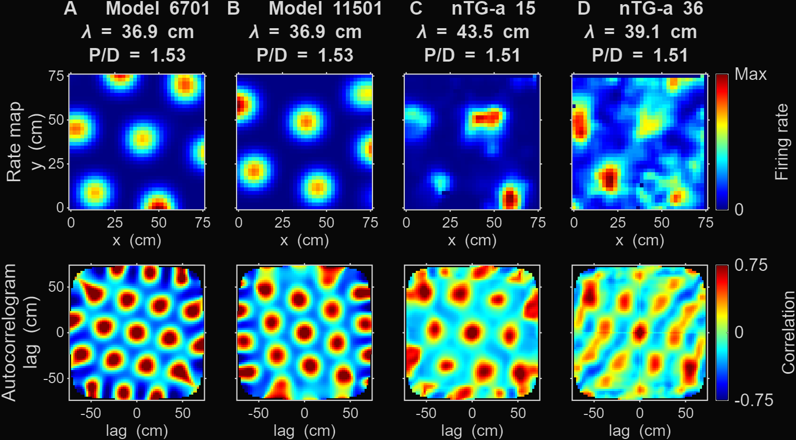
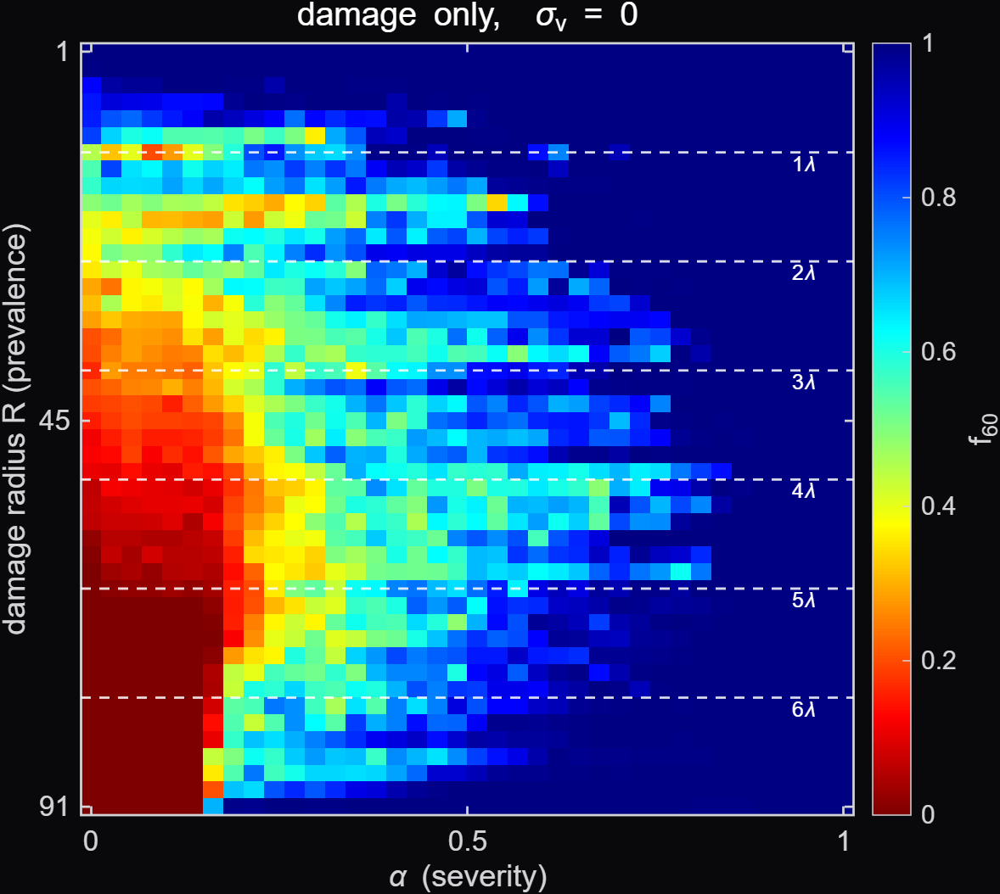
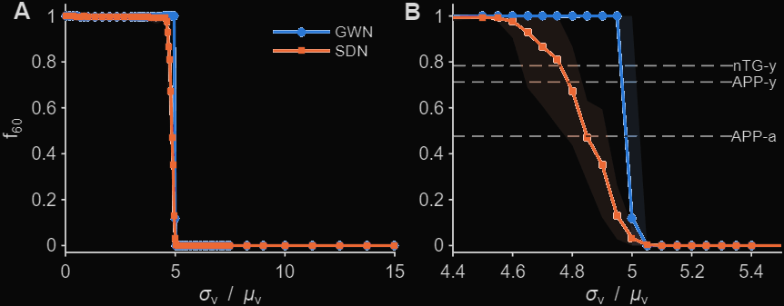
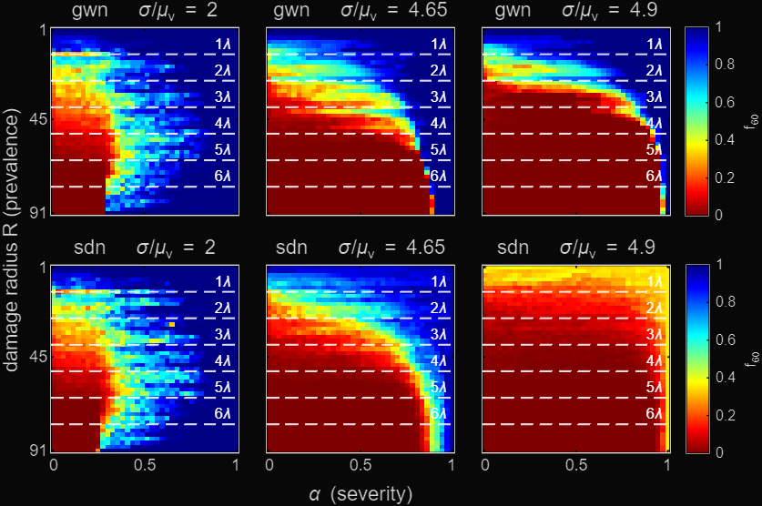

Modelling grid cell network under Alzheimer's Disease
Question
Grid cells in the medial entorhinal cortex fire on a hexagonal lattice as an animal moves through space. In an Alzheimer's mouse model, Ying et al. (2023) found that this symmetry degrades, and quantified it as the fraction of cells whose Fourier components sit 60° apart. I wanted to know whether a continuous attractor network could reproduce that loss under two damage mechanisms, a localised patch of weakened synapses (radius R, severity α) and noise on the velocity input (σv/μv), and how the two interact.
Methods
The model is the Burak and Fiete (2009) continuous attractor network, written in MATLAB with periodic boundary conditions and run in a 75 × 75 cm arena to match Ying et al. (2023). Synaptic damage follows Zhi and Cox (2021), a circular patch of radius R in which the weights are scaled by α. Velocity noise comes in two forms, Gaussian white noise (GWN) after Nagaraj and Narayanan (2026) and signal-dependent noise (SDN), both expressed relative to the mean speed
Symmetry is measured with my own implementation of the Fourier pipeline from Ying et al. Each 36 × 36 rate map is zero-padded to 256, normalised by its mean rate and Fourier transformed. The DC peak is notched out of the power spectrum, a Voronoi-shuffle baseline is subtracted, the result is thresholded at 43% of its maximum and the angles between the remaining components are read off from their centroids. A cell counts as grid-like if its adjacent components sit 60° apart, and f60 is the fraction of cells that do.
The sweeps ran on Imperial's HPC with 400 000 steps per simulation. Velocity noise was swept over 50 levels × 50 seeds, with a finer 19-level band through the transition for both noise laws. The damage plane was 38 values of α × 46 values of R × 8 seeds, repeated at selected noise levels.
Results
Before working on the model, the Fourier pipeline was checked against the published data. It reproduces the component-angle distribution of Ying et al. (2023) to within 2.04% component-count deviation.


The damage-only sweep is the control plane, 38 values of α × 46 values of R × 8 seeds. Grid symmetry is robust with f60 staying near 1 over most of the plane and only collapses when the patch is both severe (α below about 0.2) and larger than about 2λ. In between there is a transition band where hexagonal and square cells coexist, and its boundary moves to weaker damage (larger α) as the patch grows. However, as the patch gets closer to universal damage, transition boundary moves back towards stronger damage (smaller α).

Velocity noise on its own destroys grid symmetry sharply at a critical value. f60 stays at 1 until σv/μv ≈ 5 and then collapses to 0 within a narrow band for both noise types, with SDN degrading earlier and more gradually than GWN. The f60 values Ying et al. report for healthy (nTG-y) and disease-model (APP-y, APP-a) mice all fall close to the SDN curve.

With synaptic damage added on top, f60 falls as the patch grows (larger R) and as its weights weaken (smaller α), and raising the velocity noise enlarges the collapsed region of the R × α plane. So the two insults compound rather than act independently.

What I learned
To validate the instrument before running the experiment. I reimplemented the published analysis and reproduced the released code's results within an acceptable error margin. Both of the serious bugs in this project, a scale manipulation that changed something other than what I intended and a shuffle parameter set to the wrong value, were caught by that replication, not by the code failing. Code that runs is not code that is right.
To design interpretable results. Trajectories were fixed by design rather than random per run, a single control plane was shared by both noise models, and the two noise laws were run on matched mean-power so the only thing that differed between paired runs was the law itself. Most of this was learned through trial and error, running extra results than originally anticipated. Which were great experience in hind-sight.
Choose the result statistic on evidence. The headline is the mean over seeds as the median was about 1.4 times noisier and read systematically high on the healthy side of the plane, and can come in varying trajectory counts depending on pixels. The detection threshold was chosen from a sensitivity sweep and reported alongside the value the original authors used, so a reader can see what depends on it.
Report the limits of the result. The 0.43 threshold calibration rests on a question I could not close, so the report says so instead of under-selling its importance. The comparison with Zhi and Cox (2021) is also presented as indirect, because they measure symmetry in neural-sheet space and I measure it in the arena, and a reader should know that before weighing the two against each other.